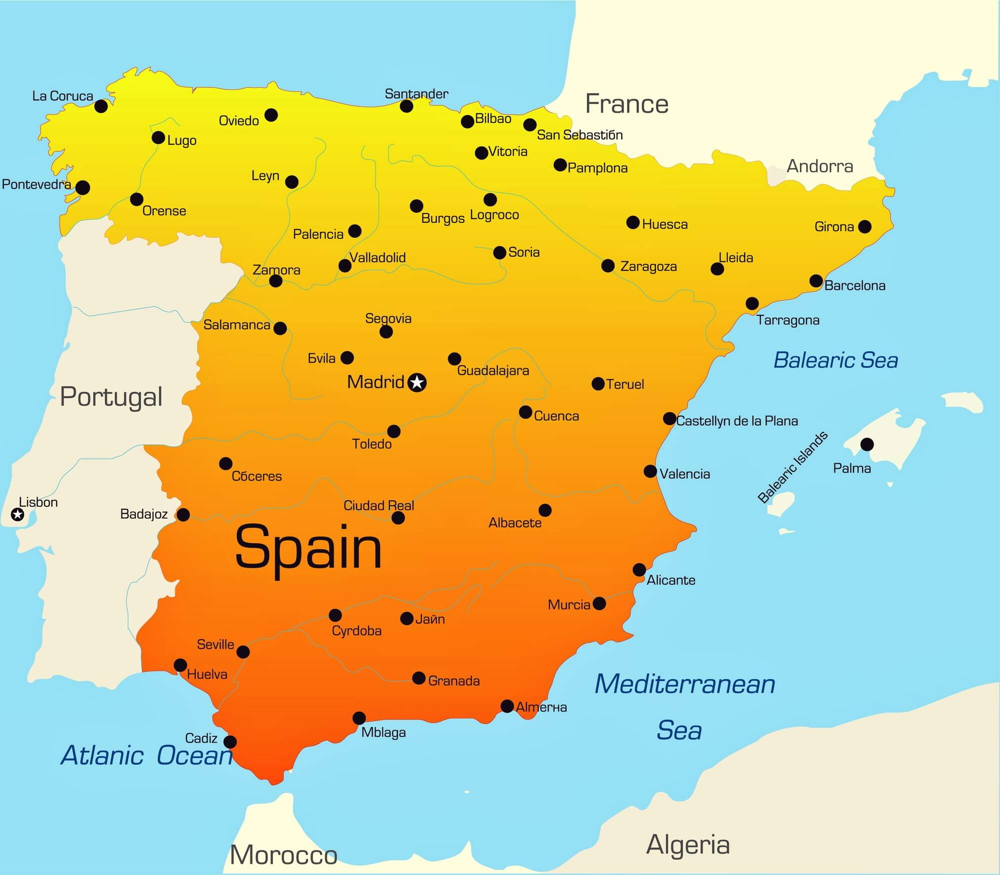
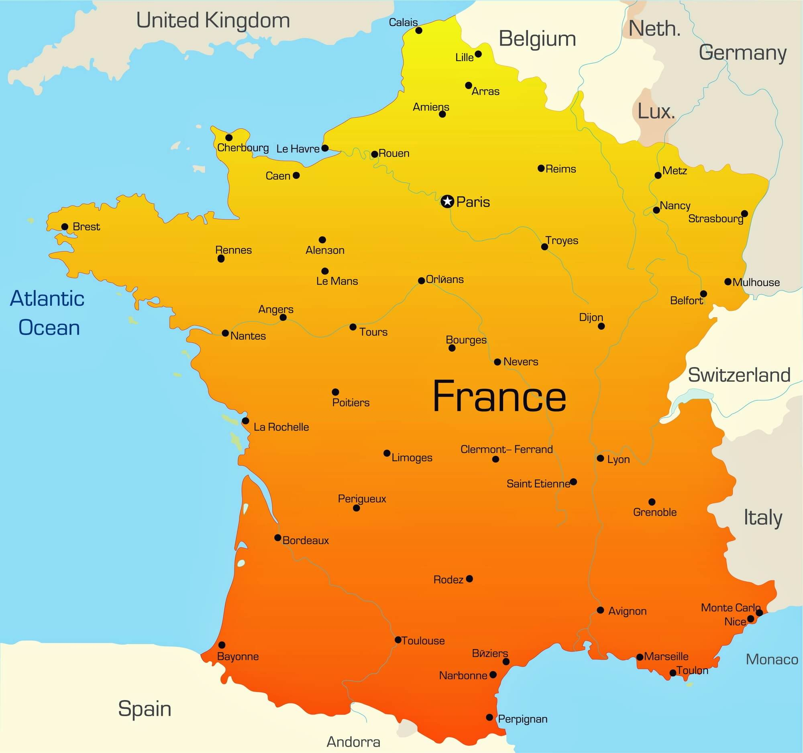
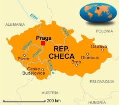

Paises
Paises Bajos
Países Bajos (en neerlandés, Nederland, pronunciado /ˈneːdərˌlɑnt/ ( escuchar)) es un país soberano ubicado al noroeste de la Europa continental y el país constituyente más grande de los cuatro que, junto con las islas de Aruba, Curazao y San Martín, forman el Reino de los Países Bajos.
Países Bajos es miembro de la Unión Europea. Su capital es Ámsterdam; sin embargo, la organización y administración del Reino se ubica en La Haya, siendo la sede oficial de la monarquía, así como de sus autoridades ejecutivas, legislativas y judiciales. Aruba, Curazao y San Martín son territorios de ultramar que no forman parte de la Unión Europea.
Ver mas
Las provincias que conforman los Países Bajos están situadas en el noroeste de Europa y limitan al norte y oeste con el mar del Norte, al sur con Bélgica y al este con Alemania. Completan el territorio neerlandés las municipalidades especiales de Bonaire, San Eustaquio y Saba, situadas en el Caribe. El país constituye una de las zonas más densamente pobladas del mundo.
Como su nombre indica, el territorio del país está formado por tierras (land) bajas (neder) de las que, aproximadamente, una cuarta parte están situadas al nivel del mar o por debajo de este.
Con frecuencia, el país es conocido como Holanda, por el nombre de su región histórica más influyente o relevante, situada en la parte occidental del país. El Diccionario panhispánico de dudas, publicado por la Real Academia Española, admite su uso como sinónimo.
Su idioma también es conocido tradicionalmente y por la misma razón como holandés, aun cuando su nombre oficial es neerlandés; en realidad, el holandés en sentido estricto es un dialecto del neerlandés; admisible por la RAE en el habla corriente, pero nunca en textos oficiales en donde debe ser referido como neerlandés. Lo mismo sucede con el gentilicio holandés. La RAE lo admite en el habla corriente, pero no para los textos oficiales. En ese caso, el adjetivo a usar es "neerlandés".
A menudo, se confunden también los Países Bajos con la unión aduanera conocida como Benelux formada por Bélgica, los Países Bajos y Luxemburgo; la denominación tiene su base en el acuerdo de cooperación intergubernamental que se hizo efectivo en 1944.
El país está clasificado como «de ingresos altos» según el Banco Mundial y es uno de los estados más desarrollados: en 2018 está situado en el décimo lugar en cuanto a desarrollo humano según el Índice de Desarrollo Humano publicado por Naciones Unidas. Es además uno de los países con mayor libertad económica, cuenta con niveles muy bajos de percepción de corrupción, y es una de las democracias más consolidadas del mundo.

Grecia
Grecia (en griego moderno, Ελλάδα, Elláda, AFI: [eˈlaða] ( escuchar); en griego antiguo, Ἑλλάς, Hellás), oficialmente República Helénica (en griego, Ελληνική Δημοκρατία, Ellinikí Dimokratía, AFI: [eliniˈci ðimokɾaˈtia]; en latín, Graecia, Res publica Hellenica o Res publica Graeca), es uno de los veintisiete estados soberanos que forman la Unión Europea. En este país viven alrededor de once millones de habitantes que conforman una sociedad muy homogénea, donde principalmente se habla griego y se practica el cristianismo ortodoxo.
Ver mas
Atenas, la capital, es la ciudad más poblada del país y la segunda es Tesalónica. Otras ciudades como El Pireo, Patras, Heraclión y Lárisa, son centros políticos, económicos y culturales a nivel regional.
Grecia está estratégicamente ubicada entre Europa, Asia y África, y comparte fronteras terrestres al noroeste con Albania, al norte con Macedonia del Norte y Bulgaria, y al noreste con Turquía. Al este se encuentra el mar Egeo, al oeste el mar Jónico y en el sur, el Mediterráneo; estos tres mares bañan sus 13 676 km de costas, el 11.º litoral más largo del mundo. El territorio griego está conformado por siete archipiélagos con unas 1400 islas, de las que 227 están habitadas. Cerca de un 80 % de su relieve consta de montañas, de las cuales la más alta es el monte Olimpo, con 2917 metros sobre el nivel del mar.
La Grecia moderna tiene su origen en la civilización de la antigua Grecia, cuna de la civilización occidental. Para Occidente es el lugar de nacimiento de la democracia, la filosofía occidental, los Juegos Olímpicos, la literatura y el estudio de la historia, la política y los más importantes principios de las matemáticas y la ciencia. El Estado griego moderno, que comprende la mayor parte del núcleo histórico de la civilización griega, se estableció en 1830, luego de una guerra de independencia del Imperio otomano. El legado de su larga historia se refleja en el arte, la arquitectura, gastronomía, literatura y otros aspectos culturales.
En la actualidad Grecia es un Estado democrático, desarrollado y un Índice de Desarrollo Humano muy alto. Grecia es además miembro de la Unión Europea desde 1981 y utiliza el euro desde 2001, forma parte de la OTAN desde 1952 y de la Agencia Espacial Europea desde 2005. Es también socio fundador de las Naciones Unidas, la OCDE y la Organización de Cooperación del Mar Negro. Sin embargo, Grecia es el país que más ha visto afectada su economía durante la crisis económica de 2008-2015, cuando redujo su PIB en un 25% durante cinco años. También han aumentado mucho las desigualdades sociales, el Coeficiente de Gini y la pobreza. No obstante, el Eurogrupo pronosticó en 2015 un aumento del PIB griego en los siguientes años.

España
España, también denominado Reino de España, es un país soberano transcontinental, miembro de la Unión Europea, constituido en Estado social y democrático de derecho y cuya forma de gobierno es la monarquía parlamentaria. Su territorio, con capital en Madrid, está organizado en diecisiete comunidades autónomas, formadas a su vez por cincuenta provincias; y dos ciudades autónomas.
España se sitúa en el suroeste de Europa y el norte de África. En Europa, ocupa la mayor parte de la península ibérica, conocida como España peninsular, y las islas Baleares (en el mar Mediterráneo); en África se hallan las ciudades de Ceuta y Melilla, las islas Canarias (en el océano Atlántico) y varias posesiones mediterráneas denominadas «plazas de soberanía».
Ver mas
El municipio de Llivia, en los Pirineos, constituye un exclave rodeado totalmente por territorio francés. Completa el conjunto de territorios una serie de islas e islotes frente a las propias costas peninsulares. Tiene una extensión de 505 370 km², por lo que es el cuarto país más extenso del continente, y con una altitud media de 650 m sobre el nivel del mar, uno de los países más montañosos de Europa. Su población supera los 47 millones de habitantes, aunque la densidad de población es reducida. Concretamente, la población durante 2021 se redujo en 65 688 habitantes, llegando hasta los 47 385 107, tras cuatro años de subida.
El territorio peninsular comparte fronteras terrestres con Francia y con Andorra al norte, con Portugal al oeste y con el territorio británico de Gibraltar al sur. En sus territorios africanos, comparte fronteras terrestres y marítimas con Marruecos. Comparte con Francia la soberanía sobre la isla de los Faisanes en la desembocadura del río Bidasoa y cinco facerías pirenaicas.
La Constitución, y su artículo 3.1, establece que «el castellano es la lengua española oficial del Estado. Todos los españoles tienen el deber de conocerla y el derecho a usarla». En 2012, era la lengua materna del 82 % de los españoles. Según el artículo 3.2, «las demás lenguas españolas serán también oficiales en las respectivas Comunidades Autónomas de acuerdo con sus Estatutos». El idioma español o castellano, segunda lengua materna más hablada del mundo y con casi 600 millones de hispanohablantes, es uno de los más importantes legados del acervo cultural e histórico de España en el mundo.
Perteneciente culturalmente a la Europa Latina y heredero de una vasta influencia grecorromana, España alberga también la cuarta colección más numerosa del mundo de sitios declarados Patrimonio de la Humanidad por la Unesco.
Es un país desarrollado —goza de la segunda esperanza de vida más elevada del mundo— y de altos ingresos, cuyo PIB coloca a la economía española en la decimocuarta posición mundial (2021). Gracias a sus características únicas, España es una gran potencia turística y se erige como el segundo país más visitado del mundo —más de 83 millones de turistas en 2019— y el segundo país del mundo en ingresos económicos provenientes del turismo internacional. Tiene un índice de desarrollo humano muy alto (0,904), según el informe de 2020 del Programa de la ONU para el Desarrollo.
España también tiene una notable proyección internacional a través de su pertenencia a múltiples organizaciones internacionales como Naciones Unidas, el Consejo de Europa, la Organización Mundial del Comercio, la Organización de Estados Iberoamericanos, la OCDE, la OTAN y la Unión Europea —incluidos dentro de esta al espacio Schengen y la eurozona—, además de ser miembro de facto del G20.
La primera presencia constatada de homínidos del género Homo se remonta a 1,2 millones de años antes del presente, como atestigua el descubrimiento de una mandíbula de un Homo aún sin clasificar en el yacimiento de Atapuerca. En el siglo iii a. C., se produjo la intervención romana en la península, lo que conllevó a una posterior conquista de lo que, más tarde, se convertiría en Hispania.
En el Medievo, la zona fue conquistada por distintos pueblos germánicos y por los musulmanes, llegando estos a tener presencia durante algo más de siete centurias. No es hasta el siglo xv, con la unión dinástica de Castilla y Aragón y la culminación de la Reconquista, junto con la posterior anexión navarra, cuando se puede hablar de la cimentación de «España», como era denominada en el exterior. Ya en la Edad Moderna, los monarcas españoles dominaron el primer imperio de ultramar global, que abarcaba territorios en los cinco continentes, dejando un vasto acervo cultural y lingüístico por el globo. A principios del xix, tras sucesivas guerras en Hispanoamérica, pierde la mayoría de sus territorios en América, acrecentándose esta situación con el desastre del 98.
Durante este siglo, se produciría también una guerra contra el invasor francés, una serie de guerras civiles, una efímera república reemplazada nuevamente por una monarquía constitucional y el proceso de modernización del país. En el primer tercio del siglo xx, se proclamó una república constitucional. Un golpe de Estado militar fallido provocó el estallido de una guerra civil, cuyo fin dio paso a la dictadura de Francisco Franco, finalizada con la muerte de este en 1975, momento en que se inició una transición hacia la democracia, cuyo clímax fue la redacción, ratificación en referéndum y promulgación de la Constitución de 1978.Acrecentado significativamente durante el llamado «milagro económico español», el desarrollo económico y social del país ha continuado a lo largo del vigente periodo democrático

Alemania
Alemania (en alemán, Deutschland, pronunciado /ˈdɔʏtʃlant/ ( escuchar)), oficialmente República Federal de Alemania (en alemán, Bundesrepublik Deutschland pronunciado /ˈbʊndəsʁepuˌbliːk ˈdɔʏtʃlant/ ( escuchar)), es uno de los veintisiete Estados soberanos que forman la Unión Europea.
Ver mas
Constituido en Estado social y democrático de derecho, su forma de gobierno es la república parlamentaria y federal. Su capital es Berlín. Está formado por dieciséis estados federados (Bundesländer) y limita al norte con el mar del Norte, Dinamarca, Suecia (frontera marítima) y el mar Báltico; al este con Polonia y la República Checa; al sur con Austria y Suiza; y al oeste con Francia, Luxemburgo, Bélgica y los Países Bajos. La ciudad de Büsingen am Hochrhein, enclavada en Suiza, también forma parte de Alemania. El territorio de Alemania abarca 357 376 km² de extensión y posee un clima templado. Con casi 83 millones de habitantes, es el país más poblado entre los Estados miembros de la Unión Europea, y es el hogar del tercer mayor grupo de emigrantes internacionales. En 2014, Alemania fue el segundo destino de las migraciones más popular en el mundo, después de Estados Unidos.
Las palabras alemán y Alemania son latinizaciones del antiguo germánico allmanis (compuesto de all ‘todos’ y man ‘hombre’, es decir, ‘todos los hombres’); el historiador romano Amiano Marcelino fue el primero en hablar de Alamannia en el siglo iv para aludir a una confederación de tribus germánicas.[cita requerida] Pero estas denominaciones eran utilizadas también en la antigüedad por los romanos para denominar a la tribu de los alamanes (no es lo mismo que alemanes), el pueblo germánico más cercano al territorio del Imperio romano. De ahí fue usada para nombrar al país entero. Además de alemán, está también extendido el uso del gentilicio germano, derivado del nombre con que los romanos se referían a las tribus ni romanas ni celtas de la zona central de Europa, cuyo territorio llamaban Germania. Desde el año 962, los territorios alemanes formaron una parte central del Sacro Imperio Romano Germánico, que duró hasta 1806. Durante el siglo xvi, las regiones del norte del país se convirtieron en el centro de la Reforma protestante.
Como un moderno Estado nación, el país fue unificado en tiempos de la guerra franco-prusiana de 1871. Tras la Segunda Guerra Mundial, cuando la Alemania nazi fue derrotada por los aliados, Alemania fue dividida en dos Estados separados a lo largo de las líneas de ocupación aliada en 1949; los Estados resultantes fueron la República Federal de Alemania y la República Democrática Alemana, que se reunificaron en 1990. Fue miembro fundador de la Comunidad Europea (1957), que se convirtió en la Unión Europea en 1993. Es parte del espacio Schengen y adoptó la moneda común europea, el euro, en 1999 (movimiento de pagos sin efectivo) y 2002 (pagos en efectivo).
Alemania es miembro de la Organización de las Naciones Unidas, la OTAN, el G-7, las naciones G4, y firmó el Protocolo de Kioto. Es la cuarta mayor economía mundial en cuanto al PIB nominal y la primera de Europa, siendo además la principal potencia industrial del continente. También es el tercer mayor exportador de mercancías del mundo y, en términos absolutos, asigna el tercer mayor presupuesto anual de la ayuda al desarrollo en el mundo, mientras que sus gastos militares ocuparon el séptimo lugar mundial en 2020. El país ha desarrollado un alto nivel de vida y establecido un sistema completo de seguridad social. Tiene una posición clave en los asuntos europeos y mantiene una estrecha relación con varias asociaciones a nivel mundial.[cita requerida] Es reconocida como uno de los líderes en los sectores científico y tecnológico.

Belgica
Bélgica (en neerlandés, België, pronunciado /ˈbɛlɣiə/ ( escuchar); en francés, Belgique, Acerca de este sonido [bɛlʒik] (?·i); en alemán, Belgien, pronunciado /ˈbɛlɡiən/ ( escuchar)), oficialmente Reino de Bélgica (en neerlandés, Koninkrijk België, pronunciado /ˈkonɪŋkrɛɪk ˈbɛlɣiə/ ( escuchar); en francés, Royaume de Belgique y en alemán, Königreich Belgien, pronunciado /ˈkøːnɪçˌʁaɪ̯ç ˈbɛlɡi̯ən/ ( escuchar)), es uno de los veintisiete estados soberanos que forman la Unión Europea. Está situado en el noroeste europeo.
Ver mas
El país cubre una superficie de 30 528 kilómetros cuadrados1 y posee una población de 11 550 039 habitantes según la estimación de 2021. Su capital y la conurbación más poblada es Bruselas mientras su ciudad (municipio) más poblada es Amberes.
Es un Estado multilingüístico con tres lenguas oficiales: el 57 % de su población, en la Región de Flandes principalmente, habla neerlandés, mientras que cerca del 42 % habla francés (en la región de Valonia, al sur, y en la Región de Bruselas-Capital, una región oficialmente bilingüe que acoge una mayoría de hablantes de francés). Menos de un 1 % de los belgas vive en la Comunidad germanófona, donde hablan alemán, junto a la frontera al este del país. A menudo, esta diversidad lingüística lleva a severos conflictos políticos y culturales, muy parecidos a los de otros países bilingües, reflejándose en el complejo sistema de gobierno de Bélgica y en su historia política.
Bélgica recibe su nombre de la denominación latina de la parte más septentrional de la Galia, Gallia Belgica, el cual, a su vez, procede de un grupo de tribus celtas, los belgas. Históricamente, Bélgica ha sido parte de los Países Bajos de los Habsburgo, los cuales incluían los actuales Países Bajos y el Gran Ducado de Luxemburgo, ocupando una región algo mayor que el moderno Benelux.
Desde finales de la Edad Media hasta el siglo xvii, fue un floreciente centro de comercio y cultura. Desde el siglo xviii hasta la Revolución belga de 1830, Bélgica, en aquella época llamada los Países Bajos del Sur, fue el lugar de muchas batallas entre las potencias europeas y es por ello que se ha ganado el apodo de "el campo de batalla de Europa" o "la cabina de Europa".
Es uno de los miembros fundadores de la Unión Europea, cuyas instituciones principales están ubicadas en el país, así como un número importante de otras organizaciones internacionales, como la OTAN.

Italia
Italia (en italiano, Italia, pronunciado /i'talja/ ( escuchar)), oficialmente la República Italiana (en italiano, Repubblica Italiana pronunciado /re'pub:lika ita'ljana/), es un país soberano transcontinental, miembro y fundador de la Unión Europea, constituido en una república parlamentaria compuesta por veinte regiones, integradas estas, a su vez, por 111 provincias.
Ver mas
Italia se ubica en el centro del mar Mediterráneo, en Europa meridional. Ocupa la península itálica así como la llanura Padana, las islas de Sicilia y Cerdeña y alrededor de ochocientas islas menores, entre las que se destacan las islas Tremiti en el mar Adriático, los archipiélagos Campano y Toscano en el mar Tirreno, o las islas Pelagias en África septentrional, entre otras. En el norte, está rodeada por los Alpes y tiene frontera con Francia, Suiza, Austria y Eslovenia. Los micro-Estados de San Marino y Ciudad del Vaticano son enclaves dentro del territorio italiano. A su vez, Campione d'Italia, es un municipio que forma un pequeño exclave italiano en territorio suizo.
Debido a su localización central en el Mar Mediterráneo, Italia recibió, durante la Antigüedad, diversas influencias de civilizaciones mediterráneas exteriores, como la de los fenicios y cartagineses en sus islas mayores y de los antiguos griegos en la llamada Magna Grecia, así como también fue el hogar de muchas culturas propias distintas, como la civilización nurágica, los etruscos y los latinos, siendo estos últimos quienes dieron vida a la civilización romana, y asistió al nacimiento de la República y del posterior Imperio romano. Tras la caída del Imperio romano de Occidente, bizantinos, lombardos y musulmanes se disputaron el control sobre el territorio itálico, quebrando así su anterior unidad política. A partir de la Plena Edad Media, Italia fue la cuna de repúblicas marítimas como Venecia, Génova, Pisa y Amalfi, de los Estados Pontificios y también del humanismo, del Renacimiento y del movimiento barroco, entre otros Estados y movimientos culturales. En el curso del siglo xix, mediante el proceso histórico conocido como Risorgimento, los varios territorios italianos lograron unificarse bajo un mismo Estado: el Reino de Italia.
La capital de Italia, Roma, ha sido durante siglos el centro político y cultural de la civilización occidental. Además, es la ciudad santa para la Iglesia católica, siendo el papa el obispo de Roma y encontrándose dentro de la ciudad el micro-Estado del Vaticano. El significado cultural del país se refleja en todos sus Patrimonios de la Humanidad, ya que tiene 58, el país con mayor número del mundo.
Es el tercer país de Europa que más turistas recibe por año,siendo Roma la tercera ciudad más visitada del continente. Otras ciudades importantes son: Milán, centro de finanzas y de industria, y, según el Global Language Monitor, la capital de la Moda; Nápoles, importante puerto en el Mediterráneo, capital histórica y ciudad más poblada del Mezzogiorno; Turín, centro de industria automovilística y de diseño industrial. Italia es una república democrática, forma parte del G7 o grupo de las siete más grandes naciones avanzadas del mundo y es un país desarrollado con una calidad de vida muy alta, encontrándose en 2005 entre las siete primeras del mundo.
Es el país número 28 (informe 2017) en materia de alto índice de desarrollo humano. Es una potencia regional y mundial, miembro fundador de la Unión Europea, firmante del Tratado de Roma en 1957. También es miembro fundador de la Organización del Tratado del Atlántico Norte (OTAN) y miembro del OTAN Quint, de la Organización para la Cooperación y el Desarrollo Económico, de la Organización Mundial del Comercio, del Consejo de Europa, del G-4, del G-12 y del G20. El país, y especialmente su capital, tiene una fuerte repercusión en temas de política y cultura, en organizaciones mundiales como la Organización para la Agricultura y la Alimentación (FAO), el Fondo Internacional de Desarrollo Agrícola (IFAD), el Glocal Forum o el Programa Mundial de Alimentos (WFP).

Inglaterra
Inglaterra (en inglés, England /ˈɪŋɡlənd/; en córnico, Pow Sows) es una de las cuatro naciones constituyentes del Reino Unido. Su territorio está formado geográficamente por la parte sur y central de Gran Bretaña, isla que comparte junto a Escocia y Gales, y cerca de 100 islas más pequeñas como las islas Sorlingas y la isla de Wight. Limita al norte con Escocia, al oeste con Gales —sus dos fronteras terrestres—, al noroeste con el mar de Irlanda, al suroeste con el mar Celta, al este con el mar del Norte y al sur con el canal de la Mancha. Inglaterra asume el 84 % de la población y el 85 % del PIB del Reino Unido.
Ver mas
El territorio actual de Inglaterra ha estado habitado por varias culturas desde hace cerca de 35 000 años, pero toma su nombre de los anglos, uno de los pueblos germánicos que se establecieron en el lugar durante los siglos v y vi. Se convirtió en un Estado unificado en el año 927 y desde la era de los descubrimientos, que comenzó en el siglo xv, ha tenido un gran impacto cultural y legal en todo el mundo. El idioma inglés, la Iglesia anglicana y el derecho de Inglaterra —tomado como base para el sistema jurídico de muchos otros países del mundo— se desarrollaron en Inglaterra, y el sistema parlamentario de gobierno ha sido mayormente adoptado por otras naciones.
El territorio de Inglaterra está formado, principalmente por colinas bajas y llanuras, sobre todo en el centro y el sur del país. Sin embargo, hay terrenos de montaña en el norte (por ejemplo, el parque nacional del Distrito de los Lagos y los Peninos) y en el oeste (por ejemplo, Dartmoor y las colinas de Shropshire). La capital es Londres, que tiene la mayor área metropolitana del Reino Unido. La población de Inglaterra, de 56,3 millones de habitantes, comprende el 84% de la población del Reino Unido, concentrada en gran medida en torno a Londres, el sureste y las conurbaciones de las Midlands, la región del Noroeste, el noreste y Yorkshire, que se desarrollaron como grandes regiones industriales durante el siglo xix.
El Reino de Inglaterra —que desde 1284 también incluía a Gales— fue un estado independiente hasta 1707, fecha en la que la reina Ana de Gran Bretaña firmó el Acta de Unión con Escocia, para crear el Reino de Gran Bretaña. En 1801 el Reino de Irlanda se unió al Reino de Gran Bretaña creando así el Reino Unido de Gran Bretaña e Irlanda hasta 1922. Con la independencia y partición de Irlanda desde entonces es el Reino Unido de Gran Bretaña e Irlanda del Norte.

Francia
Francia (en francés: France, pronunciado /fʁɑ̃s/ ( escuchar)), oficialmente la República francesa (en francés: République française, pronunciado /ʁepyblik fʁɑ̃sɛːz/ ( escuchar)), es un país transcontinental que se extiende por Europa Occidental y por regiones y territorios de ultramar en América y los océanos Atlántico, Pacífico e Índico. Su área metropolitana se extiende desde el Rin hasta el Océano Atlántico y desde el Mar Mediterráneo hasta el Canal de la Mancha y el Mar del Norte; los territorios de ultramar incluyen la Guayana Francesa en América del Sur, San Pedro y Miquelón en el Atlántico Norte, las Antillas francesas y muchas islas en Oceanía y el Océano Índico.
Ver mas
Debido a sus diversos territorios costeros, Francia posee la mayor zona económica exclusiva del mundo. Francia limita con Bélgica, Luxemburgo, Alemania, Suiza, Mónaco, Italia, Andorra y España en Europa, así como con los Países Bajos, Surinam y Brasil en América. Sus dieciocho regiones integrales (cinco de las cuales son de ultramar) abarcan una superficie combinada de 643 801 km² y más de 67 millones de personas. Francia es una república semipresidencialista unitaria con capital en París, la mayor ciudad del país y principal centro cultural y comercial; otras zonas urbanas importantes son Marsella, Lyon, Toulouse, Lille, Burdeos y Niza.
Habitado desde el Paleolítico, el territorio de la Francia metropolitana fue colonizado por tribus celtas conocidas como galos durante la Edad de Hierro. Roma se anexionó la zona en el año 51 a. C., lo que dio lugar a una cultura galorromana diferenciada que sentó las bases de la lengua francesa. Los francos germánicos formaron el Reino de Francia, que se convirtió en el corazón del Imperio carolingio. El Tratado de Verdún de 843 dividió el imperio, y Francia Occidental se convirtió en el Reino de Francia en 987. En la Alta Edad Media, Francia era un reino feudal poderoso pero muy descentralizado. Felipe II reforzó con éxito el poder real y derrotó a sus rivales para duplicar el tamaño de las tierras de la corona; al final de su reinado, Francia se había convertido en el estado más poderoso de Europa.
Desde mediados del siglo xiv hasta mediados del siglo xv, Francia se vio inmersa en una serie de conflictos dinásticos con Inglaterra, conocidos colectivamente como la Guerra de los Cien Años, y como resultado surgió una identidad francesa distinta. El Renacimiento francés fue testigo del florecimiento del arte y la cultura, del conflicto con la Casa de Habsburgo y del establecimiento de un imperio colonial global, que en el siglo xx se convertiría en el segundo más grande del mundo.
La segunda mitad del siglo xvi estuvo dominada por guerras civiles religiosas entre católicos y hugonotes que debilitaron gravemente al país. Francia volvió a ser la potencia dominante de Europa en el siglo xvii, bajo el mando de Luis XIV, tras la Guerra de los Treinta Años. Las políticas económicas inadecuadas, los impuestos no equitativos y las frecuentes guerras (especialmente la derrota en la Guerra de los Siete Años y la costosa participación en la Guerra de la Independencia de Estados Unidos), dejaron al reino en una situación económica precaria a finales del siglo xviii. Esto precipitó la Revolución francesa de 1789, que derrocó el Antiguo Régimen y produjo la Declaración de los Derechos del Hombre y del Ciudadano, que expresa los ideales de la nación hasta el día de hoy.
Francia alcanzó su apogeo político y militar a principios del siglo xix con Napoleón Bonaparte, subyugando gran parte de la Europa continental y estableciendo el Primer Imperio francés. La Revolución francesa y las Guerras napoleónicas marcaron el curso de la historia europea y mundial. El colapso del imperio inició un periodo de relativa decadencia, en el que Francia soportó una tumultuosa sucesión de gobiernos hasta la fundación de la Tercera República Francesa durante la Guerra franco-prusiana de 1870. En las décadas siguientes se produjo un periodo de optimismo, florecimiento cultural y científico, así como de prosperidad económica, conocido como la Belle Époque.
Francia fue uno de los principales participantes en la Primera Guerra Mundial, de la que salió victoriosa con un gran coste humano y económico. Estuvo entre las potencias aliadas de la Segunda Guerra Mundial, pero pronto fue ocupada por el Eje en 1940. Tras la liberación en 1944, se instauró la efímera Cuarta República, que posteriormente se disolvió en el transcurso de la Guerra de Argelia. La actual Quinta República fue creada en 1958 por Charles de Gaulle. Argelia y la mayoría de las colonias francesas se independizaron en la década de 1960, y la mayoría de ellas mantienen estrechos vínculos económicos y militares con Francia.
Francia conserva su condición secular de centro mundial de arte, ciencia y filosofía. Alberga el quinto mayor número de sitios del Patrimonio Mundial de la UNESCO y es el principal destino turístico del mundo, recibiendo más de 89 millones de visitantes extranjeros en 2018. Francia es un país desarrollado con la séptima economía del mundo por PIB nominal y la novena por PPA; en términos de riqueza agregada de los hogares, ocupa el cuarto lugar en el mundo. Francia obtiene buenos resultados en las clasificaciones internacionales de educación, sanidad, esperanza de vida y desarrollo humano. Sigue siendo una gran potencia en los asuntos mundiales, ya que es uno de los cinco miembros permanentes del Consejo de Seguridad de las Naciones Unidas y es un Estado oficial poseedor de armas nucleares. Francia es uno de los miembros fundadores y principales de la Unión Europea y la eurozona, así como un miembro clave del G7, la Organización del Tratado del Atlántico Norte (OTAN), la Organización para la Cooperación y el Desarrollo Económico (OCDE) y la Francofonía.

Republica Checa
La República Checa (en checo, Česká republika, pronunciado [ˈt͡ʃɛskaː ˈrɛpuˌblɪka] ( escuchar)), también conocida abreviadamente como Chequia (Česko, pronunciado [ˈt͡ʃɛsko]), es un país soberano de Europa Central sin litoral. Limita con Alemania al oeste, con Austria al sur, con Eslovaquia al este y con Polonia al norte. Su capital y mayor ciudad es Praga. La República Checa está formada por los territorios históricos de Bohemia y Moravia, además de una pequeña parte de Silesia.
Ver mas
El Estado checo, antes conocido como Bohemia, se formó en el siglo ix como un pequeño ducado en torno a Praga en el seno del entonces Imperio de Gran Moravia. Tras la disolución de este en el 907, el centro de poder pasó de Moravia a Bohemia bajo la dinastía Premislidas y desde 1002 el ducado fue formalmente reconocido como parte del Sacro Imperio Romano Germánico. En 1212 el ducado alcanzó la categoría de reino y durante el gobierno de los reyes y duques Premislidas y sus sucesores, los Luxemburgo, el país alcanzó su mayor extensión territorial en los siglos xiii y xiv. Durante las guerras husitas el reino tuvo que sufrir embargos económicos y la llegada de caballeros cruzados de toda Europa.
Tras la batalla de Mohács en 1526, el reino de Bohemia pasó a integrarse gradualmente a los dominios de los Habsburgo como uno de sus tres dominios principales, junto al archiducado de Austria y el reino de Hungría. La derrota de los bohemios en la batalla de la Montaña Blanca, que significó el fracaso de la revuelta de 1618-1620, llevó a la guerra de los Treinta Años y a una mayor centralización de la monarquía, además de a la imposición de la fe católica y la germanización. Con la disolución del Sacro Imperio Romano Germánico en 1806, el reino de Bohemia se integró en el Imperio austríaco. Durante el siglo xix las tierras checas se alzaron como centro industrial de la monarquía y después como núcleo de la República de Checoslovaquia que se creó en 1918, resultado del colapso del Imperio austrohúngaro en la Primera Guerra Mundial. Fue uno de los pocos gobiernos democráticos en Europa
Tras los Acuerdos de Múnich en 1938, la anexión polaca del área de Zaolzie y la ocupación alemana de Checoslovaquia y la consecuente decepción de los checos con Occidente, los soviéticos se hicieron con su favor liberando el país del yugo nazi durante la Segunda Guerra Mundial. El Partido Comunista de Checoslovaquia ganó las elecciones parlamentarias de 1946 y luego del Golpe de Praga de 1948 Checoslovaquia pasó a ser un estado socialista. Sin embargo, la creciente insatisfacción del pueblo llevó a aplicar varias reformas liberales en 1968, algo que sería duramente reprimido con la invasión de las fuerzas armadas del Pacto de Varsovia . Esto sería conocido como la Primavera de Praga, las fuerzas soviéticas permanecieron en el país hasta la Revolución de Terciopelo de 1989, cuando colapsó el régimen comunista. El 1 de enero de 1993, Checoslovaquia se dividió pacíficamente en sus dos Estados constituyentes, la República Checa y la República Eslovaca.
En 2006, la República Checa se convirtió en el primer exmiembro del Comecon en alcanzar el estatus pleno de país desarrollado según el Banco Mundial. Además, el país tiene el mayor índice de desarrollo humano de toda Europa Central y por ello está considerado un Estado con «desarrollo humano muy alto». Es el noveno país más pacífico de Europa, ocupa el 31.º lugar en el índice de democracia, que viene catalogada como "deficiente" en el país, y es el país que registra menor mortalidad infantil de su región. La República Checa es una democracia representativa parlamentaria, miembro de la Unión Europea, la OTAN, la OCDE, la OSCE, el Consejo de Europa y el Grupo de Visegrado.

Hungria
Hungría (en húngaro, Magyarország pronunciado /ˈmɒɟɒrorsaːɡ/ ( escuchar)) es uno de los veintisiete Estados soberanos que forman la Unión Europea. Está situado en la llanura panónica y tiene fronteras con Eslovaquia por el norte, con Ucrania y Rumanía por el este, con Serbia y Croacia por el sur, con Eslovenia por el suroeste y con Austria por el oeste. Su capital y mayor ciudad es Budapest. Hungría es un Estado miembro de la OTAN, de la OCDE, del Grupo de Visegrád y del Acuerdo de Schengen. Su idioma oficial es el húngaro, también conocido como magiar, que pertenece al grupo ugrofinés y que además es la lengua no indoeuropea con más hablantes de toda Europa.
Ver mas
Después del paso por el territorio de pueblos como los celtas, los romanos, los hunos, los eslavos, los gépidos y los ávaros, el gran príncipe Árpád fundó Hungría en el siglo ix. Su bisnieto Esteban I accedió al trono en al año 1000 y convirtió el país al cristianismo. El Reino de Hungría existió durante cinco siglos y en algunos momentos de su historia llegó a ser uno de los centros culturales del mundo occidental. Tras la derrota magiar en la batalla de Mohács ante los otomanos, gran parte de Hungría integró el imperio otomano durante 150 años (1541-1699). Después, Hungría se integró en los dominios de los Habsburgo y más tarde formó parte del Imperio austríaco, dentro del cual obtuvo autonomía desde 1867 como parte constituyente de la Doble Monarquía del Imperio austrohúngaro.
Hungría como parte del Imperio se desarrolló hasta alcanzar el estatus de potencia regional hasta el final de la Primera Guerra Mundial, cuando la derrota llevó a la firma del Tratado de Trianon que le supuso la pérdida de más de dos tercios de su territorio. En la Segunda Guerra Mundial el país luchó en el bando del Eje y también sufrió importantes pérdidas materiales y humanas. Entre 1947 y 1989 Hungría estuvo regida por un gobierno socialista, un período en el que fue el centro de la atención mundial por la Revolución de 1956 y por la pionera apertura de su frontera con Austria en 1989, hecho que aceleró el colapso del Bloque comunista.
Desde 1989 Hungría es una república parlamentaria y se la considera un país desarrollado. Es un destino turístico importante, pues atrae a más de diez millones de visitantes todos los años. El país cuenta con el mayor sistema de cuevas de aguas termales del mundo, el mayor lago de Centroeuropa, el lago Balatón, y las mayores praderas naturales del Viejo continente, en Hortobágy.
Cada 15 de marzo se celebra una de las tres fiestas nacionales de la República Húngara, en conmemoración del inicio de la revolución por su independencia del Imperio austríaco en 1848, a partir de lemas como «A haza minden előtt», o sea, «La Patria ante todo».